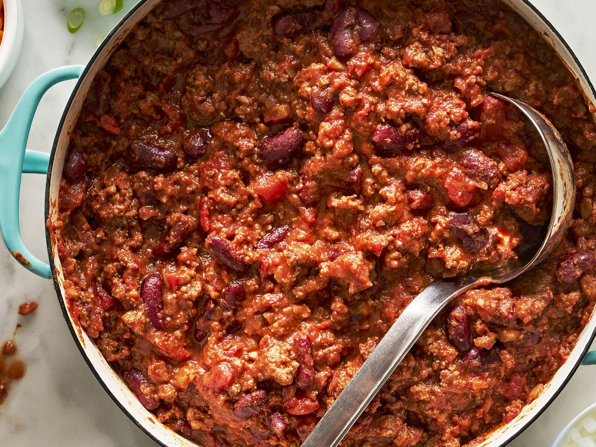

Chili

Description
Homemade chili is delicious and goes great with cornbread or over corn chips for a chili pie!
Ingredients
- 1lb ground beef
- 1 onion, chopped
- 1 15oz can tomato sauce
- 1 15oz can kidney beans
- 1 14.5oz can stewed tomatoes
- 1 1/2 cups water
- 1 pinch chili powder, or more to taste
- 1 pinch garlic powder
- salt and pepper to taste
Directions
- Place ground beef and onion in a large saucepan over medium heat; cook and stir until meat is browned and onion is tender, about 5 to 7 minutes.
- Stir in tomato sauce, kidney beans, and stewed tomatoes with juice. If you prefer a thinner consistency, you can add water. Season with chili powder, garlic powder, salt, and black pepper. Bring to a boil, reduce heat to low, cover and let simmer for 15 minutes.